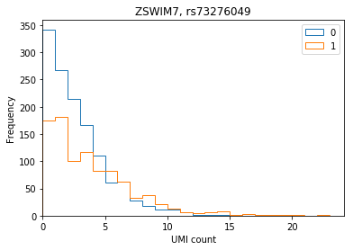
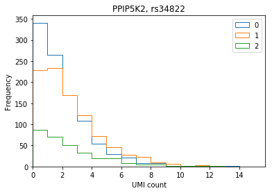
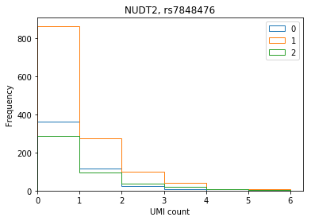
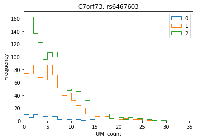
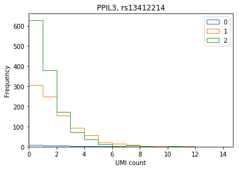

UMI count distribution stratified by genotype
Setup
sbatch $RESOURCES --job-name=ipython3 --output=ipython3.out #!/bin/bash source activate scqtl rm -f $HOME/.local/share/jupyter/runtime/kernel-aksarkar.json ipython3 kernel --ip=$(hostname -i) -f kernel-aksarkar.json
%matplotlib inline import io import os import matplotlib.pyplot as plt import numpy as np import requests import pandas as pd
Read the data
counts = pd.read_table('/project2/mstephens/aksarkar/projects/singlecell-qtl/data/scqtl-counts.txt.gz', index_col=0) counts.shape
(20327, 2304)
annotations = pd.read_table('/project2/mstephens/aksarkar/projects/singlecell-qtl/data/scqtl-annotation.txt') annotations['chip_id'].value_counts()
NA18507 233 NA18502 228 NA18508 203 NA18520 164 NA18862 132 NA19128 119 NA19190 114 NA19257 105 NA18852 105 NA18501 100 NA18856 96 NA18499 93 NA18853 89 NA18870 87 NA19210 87 NA19098 75 NA18505 65 NA19092 54 NA19159 45 NA19203 27 NA19119 20 NA18498 20 NA19131 3 NA18516 3 NA19200 3 NA19129 3 NA19122 2 NA18913 2 NA19138 2 NA18907 2 NA19214 2 NA19144 2 NA19153 2 NA18874 1 NA18924 1 NA19107 1 NA18917 1 NA18867 1 NA19102 1 NA19099 1 NA18486 1 NA18861 1 NA19171 1 NA19176 1 NA19239 1 NA18517 1 NA18523 1 NA19189 1 NA19209 1 NA18511 1 Name: chip_id, dtype: int64
genotypes = pd.read_table('/project/compbio/jointLCLs/genotype/hg19/YRI/genotypesYRI.gen.txt.gz', header=0, sep='\t') genotypes = genotypes.rename(columns={k: 'NA{}'.format(k) for k in genotypes.columns.values[9:]}) genotypes.shape
(6278013, 128)
Download ENSEMBL to Hugo gene symbol conversion table from Biomart.
query = """<?xml version="1.0" encoding="UTF-8"?> <!DOCTYPE Query> <Query virtualSchemaName = "default" formatter = "TSV" header = "0" uniqueRows = "0" count = "" datasetConfigVersion = "0.6" > <Dataset name = "hsapiens_gene_ensembl" interface = "default" > <Attribute name = "ensembl_gene_id" /> <Attribute name = "hgnc_symbol" /> </Dataset> </Query>""" resp = requests.get('http://www.ensembl.org/biomart/martservice', params={'query': query}) if resp.status_code != 200: raise RuntimeError
ensembl = pd.read_table(io.StringIO(resp.text), header=None, index_col=0) ensembl.columns = ['symbol'] ensembl.head()
symbol
0
ENSG00000210049 MT-TF
ENSG00000211459 MT-RNR1
ENSG00000210077 MT-TV
ENSG00000210082 MT-RNR2
ENSG00000209082 MT-TL1
eqtls = pd.read_table('/project/compbio/iPSC_eQTL/permutations.all.RNAseq_run.fixed.txt.gz', header=None, index_col=0, sep=' ') eqtls.columns = ['num_variants', 'alpha', 'beta', 'dummy', 'best_eqtl', 'dist', 'p', 'effect_size', 'perm', 'beta_perm'] eqtls.index = [symbol.split('.')[0] for symbol in eqtls.index.values] eqtls[['rsid', 'chrom', 'pos']] = eqtls.apply(lambda x: pd.Series(str(x['best_eqtl']).split('.')), axis=1) eqtls.merge(ensembl, left_index=True, right_index=True).merge(counts, left_index=True, right_index=True).sort_values(by='beta_perm')[['symbol', 'rsid', 'effect_size', 'beta_perm']].head()
symbol rsid effect_size beta_perm
ENSG00000214941 ZSWIM7 rs73276049 1.792670 1.567000e-17
ENSG00000145725 PPIP5K2 rs34822 1.155860 1.280260e-15
ENSG00000164978 NUDT2 rs7848476 0.998739 6.685150e-15
ENSG00000243317 C7orf73 rs6467603 1.371900 1.508780e-14
ENSG00000240344 PPIL3 rs13412214 -1.343370 1.566880e-14
Look at top mean-QTLs
Plot the distribution of UMI counts per cell stratified by genotype (no pooling by individual).
def stratify_umi(counts, genotypes, gene, rsid): counts = pd.DataFrame(counts.loc[gene].transpose()) counts.index = [k.split('.')[0] for k in counts.index] genotypes = genotypes[genotypes['ID'] == rsid].iloc[:,9:].transpose().astype(np.int32) if len(counts) == 0 or len(genotypes) == 0: raise ValueError merged = counts.merge(genotypes, how='left', left_index=True, right_index=True) merged.columns = ['count', 'genotype'] return merged def plot_umi_dist(counts, genotypes, ensembl, gene, rsid, **kwargs): if 'kind' not in kwargs: kwargs['kind'] = 'hist' plt.clf() plt.gcf().set_size_inches(6, 4) merged = stratify_umi(counts, genotypes, gene, rsid) if kwargs.get('kind', '') == 'hist': kwargs['bins'] = np.arange(merged['count'].max()).astype(np.float32) kwargs['histtype'] = 'step' for k, g in merged.groupby('genotype'): ax = g['count'].plot(**kwargs) ax.set_xlim(left=0) plt.title('{}, {}'.format(ensembl.loc[gene, 'symbol'], rsid)) plt.xlabel('UMI count') plt.legend(labels=np.arange(3))
ZWIM7
plot_umi_dist(counts, genotypes, ensembl, 'ENSG00000214941', 'rs73276049')

At this variant, there are only two YRI individuals with genotype 2, and they are not among the individuals assayed.
genotypes[genotypes['ID'] == 'rs73276049'].iloc[0,9:].transpose().astype(np.int32).value_counts()
0 83 1 34 2 2 Name: 2295561, dtype: int64
PPIP5K2
plot_umi_dist(counts, genotypes, ensembl, 'ENSG00000145725', 'rs34822')

NUDT2
plot_umi_dist(counts, genotypes, ensembl, 'ENSG00000164978', 'rs7848476')

C7orf73
plot_umi_dist(counts, genotypes, ensembl, 'ENSG00000243317', 'rs6467603')

PPIL3
plot_umi_dist(counts, genotypes, ensembl, 'ENSG00000240344', 'rs13412214')
